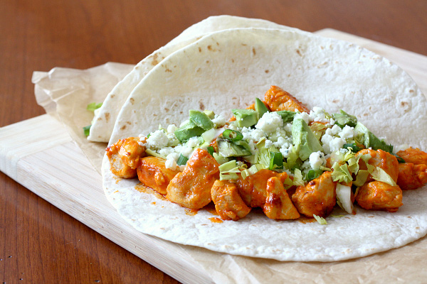
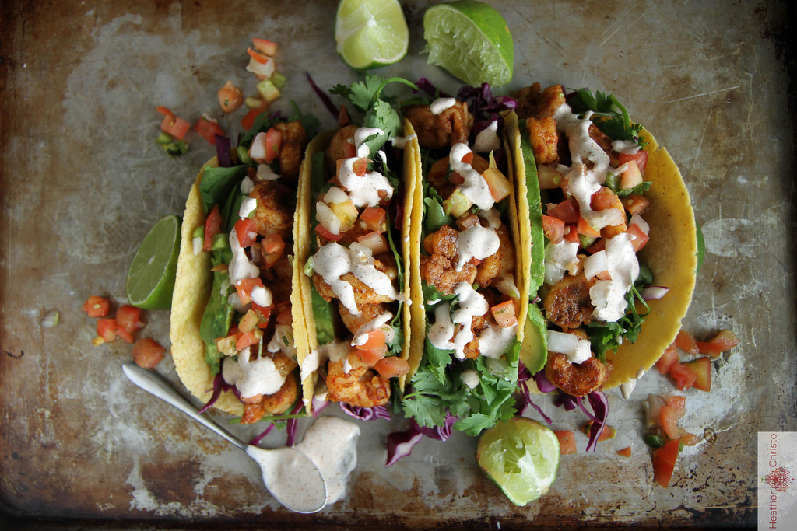

Lime-Cilantro Pork Tacos
- 1 lb. pork tenderloin, cut into thin strips
- 1 tsp olive oil
- 1 1/2 cups thinly sliced red onion
- 1 small jalapeño pepper, seeded and chopped
- 1/3 cup chicken broth
- 1/2 halved cherry tomatoes
- 3 Tbsp chopped fresh cilantro
- 2 1/2 Tbsp fresh lime juice
- 8 small corn tortillas, yellow or white
Shrimp and Black Bean Tacos
- 1 15-oz. can black beans, rinsed
- 1 large mango, cut into 1/4-in. pieces
- 1 jalapeño
- 1/2 small onion, finely chopped
- 2 tbsp. fresh lime juice
- 1/2 c. chopped fresh cilantro
- 24 medium shrimp
- 1/4 tsp. cayenne pepper
- 1 tbsp. olive oil
- 8 small corn tortillas, warmed
- 2 tbsp. flaked coconut, toasted

Grilled Buffalo Chicken Tacos
- 1½ lbs boneless, skinless chicken breasts
- 3 Tbsp hot sauce (such as Frank's Red Hot)
- 1 Tbsp unsalted butter, melted
- ½ tsp ground red pepper
- 1 small head Romaine, chopped
- 2 stalks celery, thinly sliced
- ⅓ cup low-fat Ranch dressing
- 2 oz (1/2 cup) blue cheese, crumbled
- 8 (6-inch) whole wheat tortillas
Turkey Taco Burritos
- 1.25 lbs ground turkey
- 1 teaspoon salt
- 1/4 teaspoon pepper
- 1 teaspoon cumin
- 1/2 teaspoon garlic powder
- 1/2 teaspoon chili powder
- 1/2 teaspoon onion powder
- 1/4 teaspoon oregano
- 1/4 cup all-purpose flour
- 1 can (8 oz) tomato sauce
- 1 can (15 oz) black beans, drained and rinsed
- 1 cup frozen corn
- Cooked rice
Border-Style Shrimp
- 1 1⁄2 cups chopped white onions
- 1 teaspoon ground cumin
- 1 teaspoon chili powder
- 1 1⁄2 lbs medium shrimp, peeled deveined
- 2 garlic cloves, minced
- 2 tablespoons butter
- 1⁄2 teaspoon salt
- 1⁄8 teaspoon hot pepper sauce
- 1⁄4 cup fresh lime juice
- 1⁄4 cup finely chopped green onion
Chipotle Sloppy Joes
- ½ medium onion, diced
- 1 Tbsp olive oil
- 2 cloves garlic
- 1 lb lean ground turkey or lean ground beef
- 2 Tbsp chili powder
- 1 tsp cumin
- 2 Tbsp tomato paste
- 8 oz tomato sauce
- 1 chipotle pepper in adobo sauce, diced
- 1 tsp adobo sauce from peppers
- ½ tsp Dijon mustard
- 1 Tbsp apple cider vinegar
- 1 tsp Worcestershire sauce
- 3 Tbsp brown sugar, packed
- Dash hot sauce

Chipotle Shrimp Tacos
- 1/2 cup light sour cream
- 1 Tbsp fresh lime juice
- 3 Tbsp very finely chopped cilantro
- 1 clove finely minced garlic
- 1 lb medium shrimp , peeled
- 3/4 tsp chipotle chili powder
- 1/2 tsp chili powder
- 1/2 tsp ground cumin
- 1/4 tsp ground paprika
- 1/4 tsp ground coriander
- 1/4 tsp freshly ground black pepper
- 1 Tbsp olive oil
Chipotle Turkey and Corn Soup
- 2 tsp olive oil
- 1 lb ground Turkey
- 1 small onion, chopped
- 2 oz canned diced green chiles
- 1 cup chipotle barbecue sauce
- 15-oz can black beans
- 1 cup roasted corn kernels
- 1 cup canned tomato
- 3 cups chicken stock
- 10 shakes of green (jalapeño)

Catfish Fajitas
- Sunflower oil, or other high smoking point oil
- 1 onion, peeled and sliced
- 1 red bell pepper, cored, seeded, and sliced
- 1 green bell pepper, cored, seeded, and sliced
- 1 pound catfish filets,
- 3 tablespoons butter, melted
- Blackening seasoning
- Kosher salt and pepper, to taste

Ancho-Rubbed Flank Steak
- 1 tablespoon ancho chili powder
- 2 cloves garlic, chopped
- 1/2teaspoon cinnamon
- 1teaspoon ground cumin
- 1teaspoon onion powder
- 1/2teaspoon salt
- 1/4teaspoon pepper
- 2flank steaks, about 1 1/4 pounds each